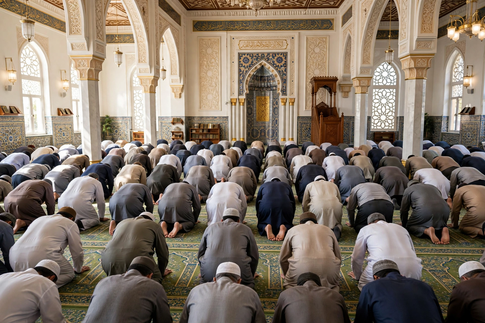

| Salah | |
|---|---|
| Arabic | ٱلصَّلَاة |
| Transliteration | aṣ-ṣalāh |
| Type | Ritual prayer |
| Frequency | Five times daily |
| Position | Second of the Five Pillars of Islam |
| Preceded by | Wudu (ablution) |

Salah (Arabic: ٱلصَّلَاة, romanized: aṣ-ṣalāh) is the Islamic ritual prayer, performed five times a day by Muslims. It is the second of the Five Pillars of Islam, following the Shahada, and is considered an obligatory act of worship (fard) for every adult Muslim.
| Prayer | Name | Time |
|---|---|---|
| Dawn | Fajr | From dawn until sunrise |
| Noon | Dhuhr | After the sun passes its zenith |
| Afternoon | Asr | Late afternoon |
| Sunset | Maghrib | Just after sunset |
| Night | Isha | After twilight disappears |
Before prayer, Muslims perform wudu, a ritual washing of the hands, face, arms, and feet. The prayer itself consists of units called rak'ah, combining standing, recitation of the Quran (especially Al-Fatiha), bowing (ruku), and prostration (sujud), while facing the qibla, the direction of the Kaaba in Mecca.
Salah may be performed individually or in congregation at a mosque, led by an imam. The Friday noon prayer (Jumu'ah) is a special congregational prayer accompanied by a sermon (khutbah). Prayer is announced by the adhan, the call to prayer traditionally delivered by a muezzin.
Shahada · Five Pillars of Islam · Sawm · Wudu · Mosque